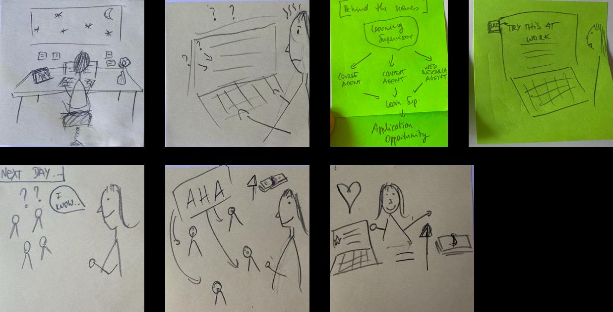
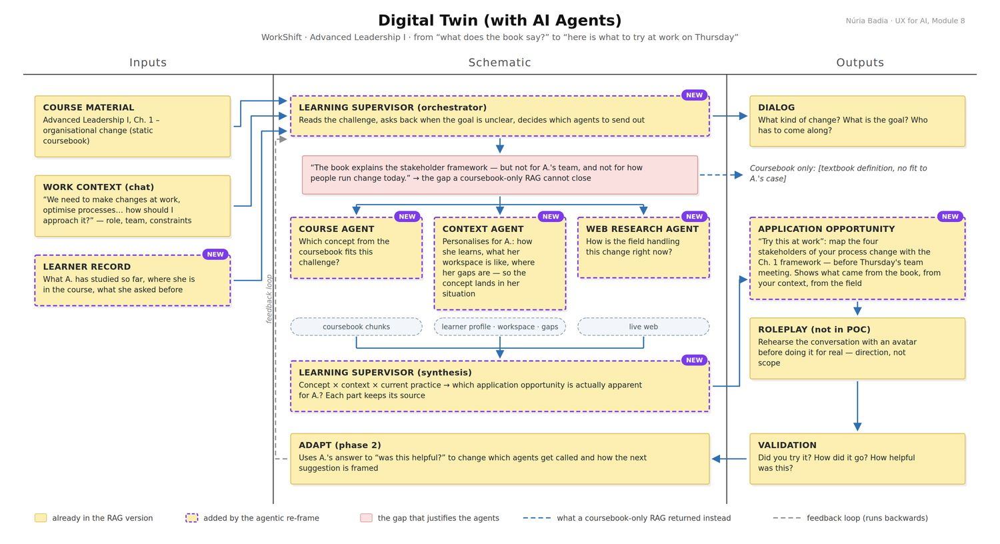
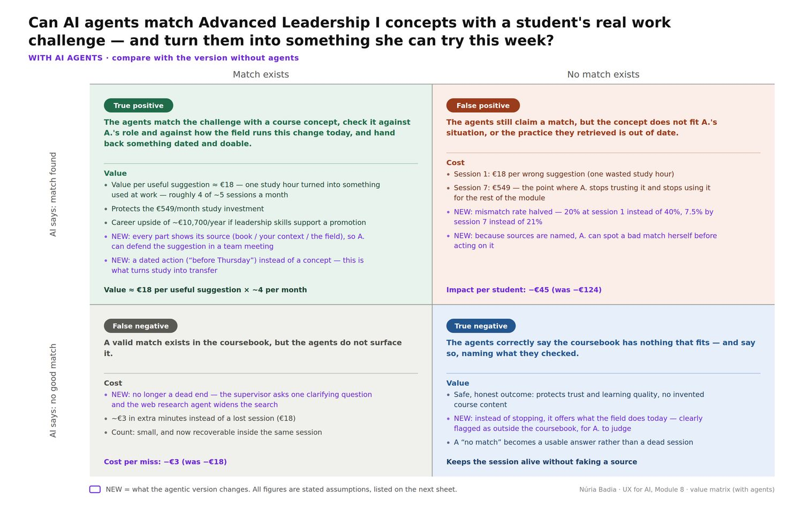

Personal project · UX for AI course · 2026
WorkShift: from the course book to something to try at work on Thursday
A student describes a real challenge at work; WorkShift finds the relevant concept in her course book and suggests how to use it, with a date on it and each part showing where it came from.

The problem
For the people using it
Ask a book-only assistant about a reorganisation and it answers, every time, correctly: here is the stakeholder framework. It does not know the student has no formal authority over the team, or that her meeting is on Thursday. Correct, sourced, useless.
For the business
A failure that returns nothing is easy to design for. A failure that returns something reasonable is much harder: nobody complains, they just quietly stop using it.
Project detail
How I worked
Start with the person, not the system
A storyboard of one student rolling out a new reporting process with no formal authority. Advice that sounds like a manager’s is reasonable and still wrong. That sentence drove everything after.

Most of the product existed before it looked like an app
A reference pack: student profile, course knowledge, tone and boundary rules, good and bad examples, an output format, a prompt template. Wired to a small server and Claude, it ran.
Define the content structure the interface needs
Instead of one block of text I asked for labelled pieces: challenge restated, explanation, action for the week, sources, follow-ups. Then it was ordinary UX again: history, one recommended step, one alternative, room to answer in your own words.
Make the agents justify themselves
A supervisor sends out three agents: the course book, the student’s own context, what the field does today. Each had to name the decision it makes, or it was a lookup wearing a costume.

Price the same error twice
Only one square of the value matrix moves: the false positive. The first bad suggestion costs a study hour; the seventh costs the student’s trust. Halving how often the system is confidently wrong is worth about €79 per student per module cycle, weakest assumption stated on the slide.

What it changed
What I took from it
“Did we build what we said?” is not “did we build the right thing?” The AI is very good at the first. The second is still judgment.